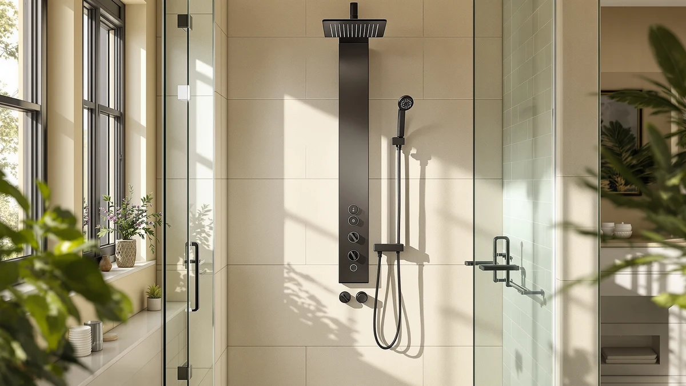

What a Shower Panel Costs to Install (2026)
Prices and picks verified as of September 2026. Independent, reader-supported reviews.


Things to Know Before You Buy
- Most panel towers connect to your existing single shower valve, which keeps the install a same-day job without new plumbing.
- Panel hardware runs $150 to $400. Labor adds nothing for a DIY install or $150 to $500 for a plumber.
- Multi-jet and LED panels need at least 40 psi of water pressure to run every function without a noticeable drop.
- Wall type matters: hitting a stud is free, but missing one means toggle bolts or added blocking, which raises the cost.
- Stainless steel panels cost more upfront than aluminum but avoid the rust and pitting that show up within a couple of years in humid bathrooms or hard water.
Shower panel installation cost varies more than most buyers expect, and the spread comes down to one question: are you replacing an existing shower valve, or starting from bare plumbing? A straightforward panel swap that reuses your current valve and supply lines runs you little beyond the price of the panel itself, since most tower systems bolt on in an afternoon. Add a plumber to move a valve, patch tile, or upgrade water pressure, and the bill climbs into the hundreds before the panel is even on the wall.
Panel hardware itself typically costs $150 to $400, with basic single-function towers at the low end and multi-jet systems with LED lighting and a handheld sprayer pushing toward the top. Labor is where costs diverge: a handy homeowner can mount most panels with a drill, a level, and an adjustable wrench, while hiring a plumber for the same job adds $150 to $500 depending on your market and whether the wall needs new blocking.
This guide walks through what actually drives the price up or down, the panel types worth knowing before you shop, how to pick the right one for your bathroom, and the mistakes that turn a $200 project into a $600 one.
What You Need to Know
The biggest factor in shower panel installation cost is whether your bathroom already has the plumbing a panel system needs. Most tower panels are designed to connect directly to a single shower valve, the same fitting that currently feeds your showerhead. If that valve is in good shape and located where you want the panel, installation is mostly a matter of shutting off the water, removing the old fixture, and bolting the new panel to the wall studs. That job takes most homeowners an hour or two and costs nothing beyond the panel itself.
Where the price jumps is when the existing setup doesn't match what the new panel needs. A corroded valve, non-standard fittings, or a plan to relocate the shower head all mean a plumber has to get involved, and that labor typically adds $150 to $500 to the project. Water pressure is the other variable worth checking before you buy: panels with four or more body jets plus a rain head and handheld sprayer need at least 40 psi to run everything at once, and homes with weaker pressure may need a booster pump to get the performance the panel promises.
Wall construction affects cost too. Panels are heavy once loaded with water, so every mounting bracket needs to land on a stud or use a toggle bolt rated for the weight. Missing studs isn't a dealbreaker, but it does mean an extra trip to the hardware store and a slightly longer install than the box suggests.
Types and Categories
Shower panels fall into a few broad categories, and knowing which one you're shopping for narrows the price range considerably. Single-function panels, which pair a rain shower head with a handheld sprayer and little else, sit at the affordable end of the market and mount with the simplest hardware. Multi-jet towers add anywhere from two to six adjustable body jets down the column, which means more plumbing connections inside the panel and a higher price tag, though the external installation process barely changes.
Material is the second split. Aluminum panels, often finished to look like brushed nickel or chrome, cost less and weigh less, which makes them easier for one person to mount alone. Stainless steel panels cost more but hold up better against water spotting, pitting, and the kind of corrosion that shows up within a year or two in humid bathrooms or homes on well water. If you're installing in a rental or a bathroom you plan to update again soon, aluminum is the more sensible spend. For a primary bathroom you expect to keep for a decade, the stainless upgrade usually pays for itself in avoided replacements.
LED panels are a smaller category worth a separate mention, since the lighting adds electronics that need to stay sealed against moisture. They install the same way as a standard panel, but a failed light strip is one more thing that can go wrong later, so check the warranty length before you buy one for a bathroom that gets daily use.
How to Choose
Start by measuring your existing shower valve's rough-in dimensions and comparing them against the panel's spec sheet, since a mismatch is the single most common reason a straightforward install turns into a call to a plumber. Most manufacturers list the valve spacing and connection type on the product page, and a five-minute check before you order saves a return shipment or an unplanned repair bill later.
Next, match the panel's water pressure requirement to what your home actually delivers. A panel with a rain head, four body jets, and a handheld sprayer needs enough flow to run all three at once without every function weakening. If you're not sure what your bathroom's pressure looks like, a pressure gauge that threads onto an outdoor spigot gives you a reading in under a minute, and it's worth doing before you spend $300 on a panel that underperforms in your specific plumbing.
Consider who's doing the install when you're comparing shower panel installation cost between models. If you're mounting it yourself, look for panels with a single-valve connection and a bracket system that tolerates some play in stud spacing, since that flexibility is what keeps a DIY job from stalling out. If you're paying a plumber regardless, the material and feature set matter more than installation-friendliness, since the labor cost stays roughly the same whether the panel is basic or loaded with jets.
Finally, weigh finish against your water quality. Homes with hard water or coastal humidity see faster wear on aluminum and chrome finishes than on brushed stainless steel. Paying more upfront for a finish that resists spotting and corrosion is often cheaper over five years than replacing a budget panel twice in that span.
Common Mistakes to Avoid
The most expensive mistake is buying a panel before confirming it will fit your existing valve. Panels come in a handful of standard rough-in spacings, and installing a mismatched one means either modifying the wall plumbing or returning the unit and starting over, both of which add time and cost to what should have been a same-day project.
Overtightening the supply hose connection is the second common error, and it's the one most likely to show up as a leak weeks after installation rather than during the job itself. Hand-tighten the fitting, add a partial turn with a wrench, and stop. Cracked fittings from over-torquing are a frequent cause of warranty claims on panel systems.
Skipping the cure time on silicone sealant is another shortcut that costs more later. Running water through a freshly sealed panel before the silicone has set, typically two to four hours, lets water find its way behind the panel and into the wall, which can mean drywall repair on top of the original installation cost.
Finally, homeowners often mount panels without checking for wall studs, relying on drywall anchors that aren't rated for a water-filled panel's weight. A panel that comes loose from the wall is a safety issue as well as a repair bill, so use a stud finder and toggle bolts wherever a bracket hole misses solid framing.
Care and Maintenance
Keeping a shower panel in good shape mostly comes down to managing water spots and mineral buildup before they harden into something a sponge can't handle. Wiping the panel down with a squeegee or microfiber towel after each use keeps hard water spots from etching into the finish, particularly on chrome and aluminum surfaces that show mineral deposits faster than brushed stainless steel.
For jets and the handheld sprayer, a monthly soak in a diluted vinegar solution clears mineral buildup from the nozzles before it restricts water flow. Reviewers who've owned multi-jet panels for a year or more consistently note that neglected jets are the first thing to lose pressure, well before any other part of the system shows wear.
Check the caulk line around the panel's edges every few months. Silicone seals shrink and crack over time, and a compromised seal lets water behind the panel where it can reach the wall framing. Recaulking is a quick, inexpensive fix that's far cheaper than the water damage it prevents.
Avoid abrasive cleaners and scouring pads on any finish, since they dull the surface and create texture that collects grime faster afterward. Mild dish soap and warm water handle everyday buildup on every panel material, and owners of stainless steel units report that this simple routine keeps the finish looking new for years longer than aggressive cleaning products would.
Our Top Picks
If you'd rather skip the research and go straight to a panel that fits most bathrooms and budgets, these three options cover the range from full-featured to budget-friendly.

Editor's Pick
Blue Ocean 52" Aluminum SPA392M
This 52-inch aluminum tower packs a rain shower head, six body jets, and a handheld sprayer into one panel, giving you the most complete feature set here without needing a plumber to add extra plumbing runs.
$369.00
Check Price on Amazon
Best Value
Blue Ocean 48" Stainless Steel
Stainless steel construction at this price point is rare, and it means better long-term corrosion resistance than most aluminum panels twice the cost, without paying for jets you may not use.
$249.00
Check Price on Amazon
Premium Choice
FUZ Contemporary Shower Panel Tower
The brushed finish and contemporary flat-panel design read as higher-end than the price suggests. It's a good fit for a recently renovated bathroom where the fixtures need to match a more modern look.
$174.00
Check Price on AmazonFrequently Asked Questions
How much does it cost to install a shower panel?
Shower panel installation cost runs $150 to $400 for the panel itself if you're connecting to an existing valve and mounting it yourself. Hiring a plumber, moving the valve, or repairing wall damage can push the total to $600 or more.
Can I install a shower panel myself to save money?
Yes, if your existing shower valve is compatible and in good condition. Most panels bolt to the wall studs and connect to the same single valve that feeds your current showerhead, which keeps the job to a drill, a level, and an adjustable wrench.
Does shower panel installation cost more for stainless steel than aluminum?
Stainless steel panels typically cost $50 to $150 more than comparable aluminum models, but they resist water spotting and corrosion better over time, which often makes them the cheaper option across a five-year span.
Do I need a plumber to install a shower panel system?
Most homeowners handle the install themselves in an afternoon, since panel towers connect to the existing shower valve instead of new plumbing. You'll want a plumber only if your current valve is corroded, mismatched to standard fittings, or you're relocating the shower.
What raises the cost of installing a shower panel the most?
Plumbing work is the biggest cost driver, whether that's replacing a corroded valve, adding a pressure booster for a multi-jet panel, or patching tile around a relocated fixture. The panel itself is usually the smaller line item.
Verdict
Shower panel installation cost comes down to two decisions: how much plumbing work you need, and how much finish and feature set you want to pay for. If your existing valve is in decent shape, most homeowners can mount a panel themselves in an afternoon for the price of the hardware alone, typically $150 to $400. Add a plumber, wall repairs, or a pressure booster, and the total climbs into the hundreds more.
For most bathrooms, we point installers toward Blue Ocean's panels first. The 52-inch aluminum SPA392M covers the widest range of jet and shower functions in one connection, while the 48-inch stainless steel version is the better buy if you want long-term corrosion resistance without the six-jet price tag. Whichever finish and feature set you choose, checking your valve's rough-in dimensions and your home's water pressure before you buy is what keeps a shower panel installation on budget instead of turning into a bigger plumbing project.